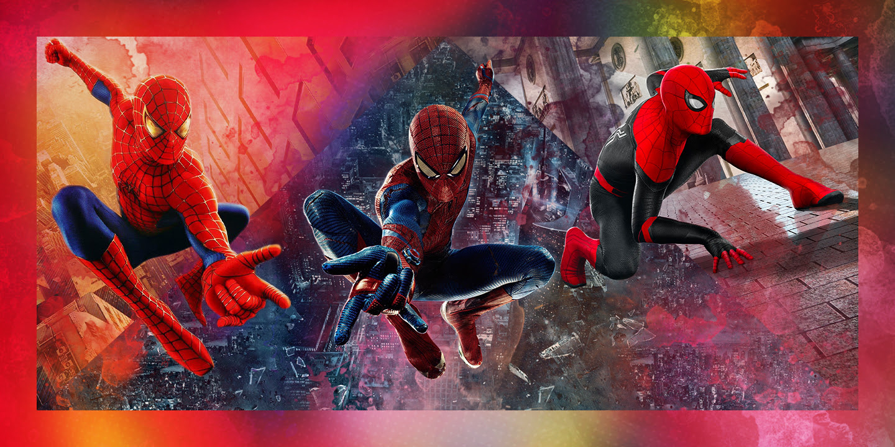

Homem Aranha

O Homem-Aranha (alter ego de Peter Parker) é um dos super-heróis mais famosos da Marvel Comics, criado por Stan Lee e
Steve Ditko em 1962.
A Origem
- Quem é: Peter Parker era um jovem estudante do ensino médio, inteligente, tímido e considerado
"nerd", que vivia em Nova York com seus tios, Ben e May.
- O Incidente: Durante uma demonstração científica, Peter foi picado por uma aranha radioativa (ou
geneticamente modificada)
- A grande lição:No início, Peter usa seus poderes para ganho pessoal. Após deixar um ladrão
escapar — o mesmo criminoso que acaba matando seu Tio Ben —, ele aprende a principal regra de sua vida:
"Com grandes poderes vêm grandes responsabilidades".
A Vida Dupla
- O Herói: Cria disparadores de teia tecnológicos e passa a combater o crime em Nova York.
- O Garoto: Divide o tempo entre a escola (ou faculdade), os cuidados com a Tia May e empregos
apertados, como o de fotógrafo freelancer.
- Os Vilões: Enfrenta inimigos clássicos como o Duende Verde, Doutor Octopus e Electro, enquanto
tenta equilibrar romances (como com Mary Jane Watson ou Gwen Stacy) e o preconceito da imprensa
(liderada por J. Jonah Jameson no Clarim Diário).
Você sabia que três gerações diferentes de atores já deram vida ao herói nos cinemas?
Acesse para saber mais